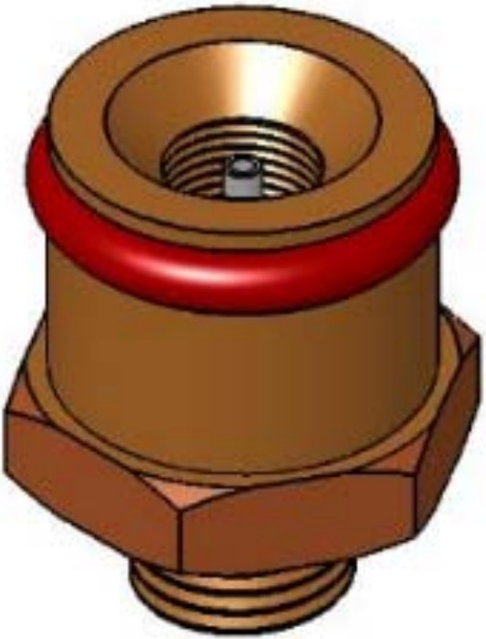
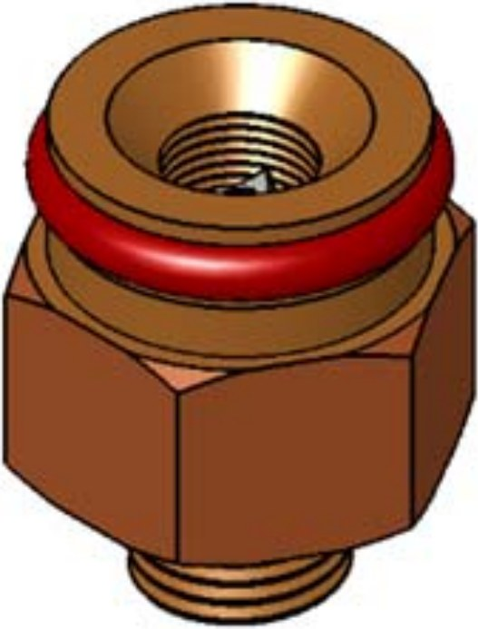

Doc no. MOC-TSB-14-14 // Vol. 14 No. 14 // Oct 27, 2014 // Fuel
Aerosol Can Adapters for the 74000 & 75000 Fuel Injection Machines
New7241675021
MOC has developed 2 new adapters (Part #s 72416 & 75021) for the 74000 & 75000 Fuel Injection Machines to connect to the aerosol cans.
What's new
The 72409 adapter is discontinued and replaced by the 72416 adapter. The 74500 adapter is discontinued and replaced by the 75021 adapter.
Contact
For more information, contact the Machine & Equipment Department at 866.244.6621.


Part numbers
| Part No. | Description | Notes |
|---|---|---|
| 72416 | Valve Style Adapter, Fuel Injector | 74000 machine; replaces 72409 |
| 75021 | Puncture Adapter, Fuel Injector | 75000 machine; replaces 74500 |